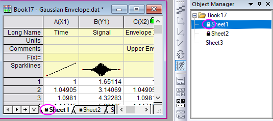
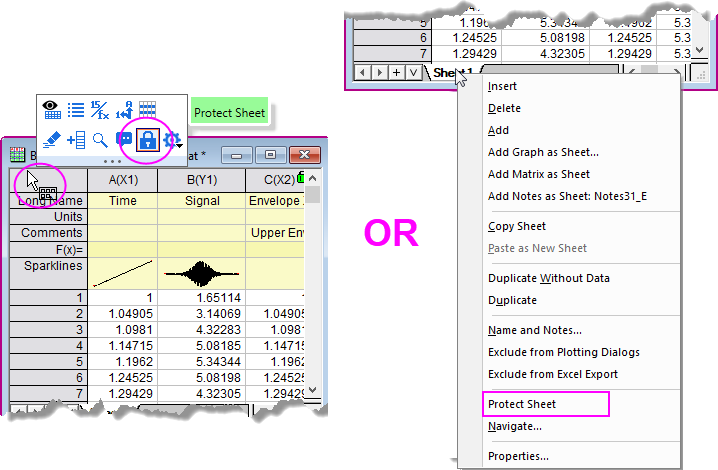
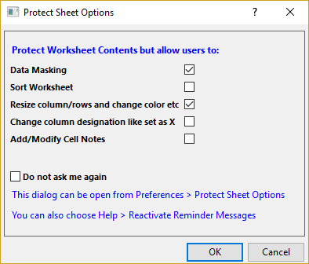

Origin-Arbeitsblätter schützen
WKS-Protect
Seit Origin 2023 können Sie ein Arbeitsblatt sperren, um es vor fehlerhaftem Umgang zu schützen wie versehentliches Überschreiben von Zellwerten. Wenn ein Blatt geschützt ist, wird ein Schlosssymbol vor seinem Namen angezeigt, sowohl im Blattreiter als auch in der Objektverwaltung.
- 
Um ein Arbeitsblatt zu schützen:
- Klicken Sie auf den Rand innerhalb eines Arbeitsblatts, um die Minisymbolleiste auf Blattebene aufzurufen. Wählen Sie dann die Schaltfläche Blatt schützen.
ODER
- Klicken Sie mit der rechten Maustaste auf den Arbeitsblattreiter und wählen Sie im Kontextmenü Blatt schützen.
- 
Beide Aktionen öffnen den Dialog Optionen für Blattschutz.
- 
Optionen für Blattschutz
Das Menü Blatt schützen verhindert grundlegend, dass der Inhalt eines Arbeitsblatts verändert wird. Sie können jedoch einige Ausnahmen im Dialog Optionen für Blattschutz zulassen.
Nicht erneut fragen: Falls dieses Kontrollkästchen aktiviert ist, wird der Dialog Optionen für Blattschutz nicht wieder angezeigt und die <zuletzt verwendeten> Optionen werden verwendet. Um die Optionen zu ändern, können Sie:
- Wählen Sie im Menü Einstellungen: Optionen für Blattschutz, um diesen Dialog erneut zu öffnen. Nachdem Sie die Einstellungen in diesem Dialog geändert haben, müssen Sie den Schutz des Blattes aufheben und dann wieder aktivieren, um die neuen Einstellungen anzuwenden.
ODER
- Wählen Sie Hilfe: Hinweise wieder aktivieren. Wenn Sie das Arbeitsblatt das nächste Mal schützen, wird der Dialog Optionen für Blattschutz wieder aufgerufen.
ODER